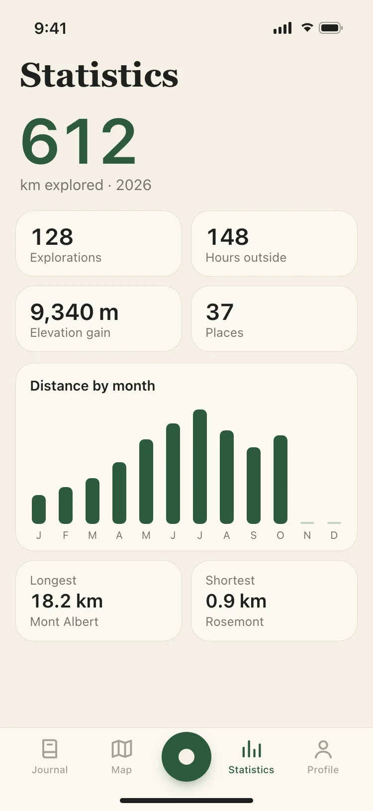
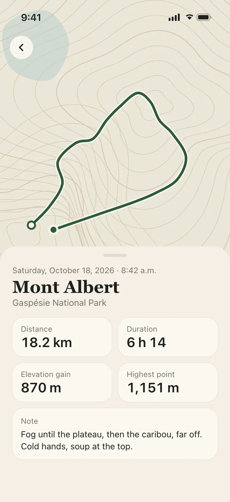
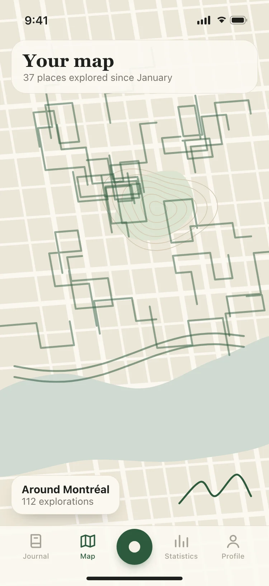

Arpente — Diario de caminatas y senderismo
Cada paso cuenta una historia.
El diario de tus caminatas y excursiones para iPhone: mapas GPS, estadísticas claras y la historia de tus exploraciones. Gratis, sin cuenta, sin anuncios y sin suscripción.

Tus exploraciones, día a día.
Cada caminata y cada excursión llega a tu diario con su mapa, sus cifras y unas palabras sobre el día.
Empieza a grabar con un solo toque.
Toca grabar y guarda tu iPhone en el bolsillo. Arpente traza tu recorrido con GPS y mide la distancia, el tiempo y el desnivel, incluso con la pantalla apagada.

Distancia, tiempo y desnivel.
Kilómetros explorados, horas al aire libre y distancia por mes. Estadísticas claras, sin ningún ritmo que superar.

Cada recorrido, en un mapa precioso.
Cada exploración guarda su mapa, sus cifras, una nota y las fotos del día.

Todos los lugares que has explorado.
Todos tus recorridos en un solo mapa: las calles de tu barrio y los senderos de tus vacaciones.

No es una app de rendimiento. Es el diario de tus exploraciones.
Arpente no te cronometra contra nadie. Guarda las caminatas y excursiones que cuentan tu vida al aire libre.
Una vuelta por el barrio
Un miércoles por la tarde · 2,1 km · 32 min · Rosemont, Montréal
Mont Albert
Un sábado de octubre · 18,2 km · 6 h 14 · ↑ 870 m · Gaspésie
Las dos merecen guardarse.
Todas las funciones.
Mapas
Cada recorrido, en un mapa precioso
Un toque
Empieza a grabar con un solo toque
Diario
Tus exploraciones, día a día
Estadísticas
Distancia, tiempo y desnivel
Tu mapa
Todos los lugares que has explorado
Notas
Unas palabras y fotos del día
Personal
Sin feed, sin seguidores, sin rankings
Sincronización con iCloud
Tu diario en tu iCloud privado
Exportación GPX
Tus recorridos, en un formato abierto
Gratis
Sin cuenta, sin anuncios, sin suscripción
Preguntas frecuentes.
¿Arpente es gratis?
Sí. Arpente es gratis, sin anuncios, sin suscripción y sin cuenta.
¿Necesito una cuenta?
No. Arpente funciona sin cuenta ni registro. Tu diario se guarda en tu iPhone y se sincroniza con tu iCloud privado, al que no tenemos acceso.
¿Arpente es una app de ejercicio?
No exactamente. Arpente no te clasifica, no compara tu ritmo ni te empuja a ir más rápido. Lleva un diario de los lugares por los que has pasado: una caminata de 2 km por tu barrio merece guardarse tanto como una excursión de 18 km por la montaña.
¿Quién puede ver mis recorridos?
Solo tú. No hay perfil público, ni feed, ni seguidores. Tus recorridos muestran dónde vives y por dónde caminas, así que se quedan en tu iPhone y en tu iCloud, y nunca los recibimos.
¿Cómo grabo una exploración?
Toca el botón de grabar y guarda tu iPhone en el bolsillo. Arpente traza tu recorrido con GPS y mide la distancia, el tiempo y el desnivel positivo. Añade una nota o una foto por el camino y toca Finish al volver.
¿Y si cambio de iPhone?
Tu diario se sincroniza con tu iCloud y vuelve a aparecer en tu nuevo iPhone, con cada recorrido, cada nota y cada foto.
¿Puedo exportar mis recorridos?
Sí. Cada recorrido se puede exportar como archivo GPX, el formato abierto que leen la mayoría de las apps de mapas y senderismo.
¿Arpente está disponible en Android?
No. Arpente llegará pronto a iPhone, en inglés y francés.
¿Más preguntas? Visita la página de soporte.
También te puede gustar.
- Reliure
La app gratuita para registrar tus lecturas en iPhone
- Porcom
Un pequeño diario de todo lo que ves
- Dernier Verre
Una más, perfectamente mezclada (próximamente)
- Coutume
Mantén tus hábitos, un día a la vez (próximamente)
De los mismos creadores.
- Puuunch
Registro de horas y hojas de tiempo para equipos pequeños.
- Makearesu.me
Crea un currículum en 5 minutos